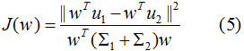
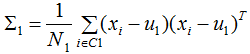
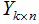

如何画lda投影结果_线性判别分析（LDA）原理总结¶
前言
线性判别分析(Linear Discriminant Analysis，以下简称LDA)是有监督的降维方法，在模式识别和机器学习领域中常用来降维。PCA是基于最大投影方差或最小投影距离的降维方法，LDA是基于最佳分类方案的降维方法，本文对其原理进行了详细总结。
目录
1. PCA与LDA降维原理对比
2. 二类LDA算法推导
3. 多类LDA算法推导
4. LDA算法流程
5. 正态性假设
6. LDA分类算法
7. LDA小结
1. PCA与LDA降维原理对比
1.1 PCA降维原理
PCA是非监督式的降维方法，在降维过程中没有考虑类别的影响，PCA是基于最大投影方差或最小投影距离的降维方法，通俗点说，PCA降维后的样本集最大程度的保留了初始样本信息，常用投影距离来描述投影前后样本的差异信息。
用数学公式来阐述这一思想：
其中原始样本集(n个m维数据)：
降维后的样本集(n个k维数据)：
假设投影变换后的新坐标系(标准正交基)：
投影前后的样本关系：
最小化(1)式，并根据条件(2)，可求得最佳的投影坐标系W。给定新的输入样本，利用(2)式可求的对应的降维样本。
1.2 LDA降维原理
LDA是有监督的降维方法，在降维过程中考虑了类别的影响，LDA是基于最佳分类效果的降维方法。因此，降维后不同类的样本集具有最大的分类间隔 。
如何描述最大分类间隔，当不同类样本的投影点尽可能远离且相同类样本的投影点尽可能接近，则样本集具有最大分类间隔。我们用类中心间的距离和类的协方差分别表示不同类的距离和相同类的接近程度。
本节只考虑二分类的LDA降维，不同类样本间的投影距离：
不同类的投影协方差之和：
结合(3)(4)式，得到优化目标函数：

最大化(5)式，得到投影向量w，其中和分别是两个类样本的中心点，和分别是两个类的协方差。
1.3 PCA与LDA降维应用场景对比
若训练样本集两类的均值有明显的差异，LDA降维的效果较优，如下图：
由上图可知，LDA降维后的二分类样本集具有明显差异的样本分布。
若训练样本集两类的均值无明显的差异，但协方差差异很大，PCA降维的效果较优，如下图：
由上图可知，PCA降维后的二分类样本分布较LDA有明显的差异。
2. 二类LDA算法推导
假设二类数据集 ，其中xi为m维列向量，我们定义两类为C1和C2，即，对应的样本集个数分别为和。
，其中xi为m维列向量，我们定义两类为C1和C2，即，对应的样本集个数分别为和。
根据上一节的LDA的优化目标函数推导投影向量，即最大化目标函数：

其中和为二类的均值向量：
和为二类的协方差矩阵：


目标函数转化为：
定义类内散度矩阵和类间散度矩阵：
则(6)式等价于：
我们对(7)式的分母进行标准化，则(7)式等价于：
引用拉格朗日乘子法，得：
因此，只要求出原始二类样本的均值和协方差就可以确定最佳的投影方向w了。
3. 多类LDA算法推导
假设k类数据集 ，其中xi为m维列向量，我们定义k类为
，其中xi为m维列向量，我们定义k类为
，对应的样本集个数分别为 。二类样本数据集通过投影向量w降到一维空间，多类样本数据集降到低维空间是一个超平面，假设投影到低维空间的维度为d，对应的基向量矩阵。
。二类样本数据集通过投影向量w降到一维空间，多类样本数据集降到低维空间是一个超平面，假设投影到低维空间的维度为d，对应的基向量矩阵。
因此，多类LDA算法的优化目标函数为：
其中类内散度矩阵 和类间散度矩阵
和类间散度矩阵 ：
：
为第j类样本的均值向量，u为所有样本的均值向量：
因为(8)式分子分母都是矩阵，常见的一种实现是取矩阵的迹，优化目标函数转化为：
优化过程如下：
参考二类LDA算法，利用拉格朗日乘子法，得：
两边左乘：
由上式可得LDA的最优投影空间是矩阵 最大d个特征值对应的特征向量所组成的。
最大d个特征值对应的特征向量所组成的。
4. LDA算法流程
前两节推导了LDA算法，现在对LDA算法流程进行总结，理清一下思路。
假设k类数据集 ，其中xi为m维列向量，我们定义k类为
，其中xi为m维列向量，我们定义k类为
 ，降维后的维度是d。
，降维后的维度是d。
1)计算每个类样本的均值向量和所有数据集的均值向量
2)计算散度矩阵，包括类内散度矩阵 和类间散度矩阵
和类间散度矩阵
3)计算的特征向量和对应的特征值
4)选择d个最大特征值对应的矩阵，矩阵的每一列表示特征向量
5)对数据集D进行降维，得到对应的降维数据集，其中。
5. 正态性假设
LDA算法对数据集进行了如下假设：
1)数据集是服从正态分布的；
2)特征间是相互独立的；
3)每个类的协方差矩阵是相同的；
但是如果不满足了这三个假设，LDA算法也能用来分类和降维，因此LDA算法对数据集的分布有较好的鲁棒性。
6. LDA分类算法
前面我们重点分析了LDA算法在降维的应用，LDA算法也能用于分类 。LDA假设各类的样本数据集符合正态分布，LDA对各类的样本数据进行降维后，我们可以通过最大似然估计去计算各类别投影数据的均值和方差，如下式：
进而得到各个类样本的概率密度函数：
其中为降维后的样本。
因此对一个未标记的输入样本进行LDA分类的步骤：
1) LDA对该输入样本进行降维；
2)根据概率密度函数，计算该降维样本属于每一个类的概率；
3)最大的概率对应的类别即为预测类别。
7. LDA小结
PCA是基于最大投影方差的降维方法，LDA是基于最优分类的降维方法，当两类的均值有明显差异时，LDA降维方法较优；当两类的协方差有明显差异时，PCA降维方法较优。在实际应用中也常结合LDA和PCA一起使用，先用PCA降维去消除噪声，再用LDA降维。
参考
http://sebastianraschka.com/Articles/2014_python_lda.html#introduction
https://www.cnblogs.com/pinard/p/6244265.html
凡本网注明"来源：XXX "的文/图/视频等稿件，本网转载出于传递更多信息之目的，并不意味着赞同其观点或证实其内容的真实性。如涉及作品内容、版权和其它问题，请与本网联系，我们将在第一时间删除内容！
作者: 黄昏看日出
来源： https://blog.csdn.net/weixin_42499335/article/details/112652055